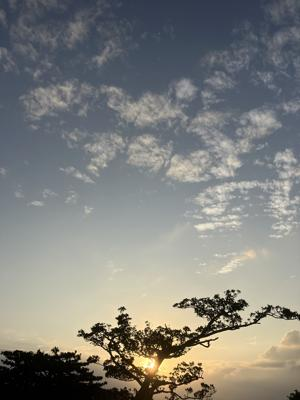

うるがいの話 ある日
最新: 『老いるもよし』【うるがいの話 ある日】とは 一日だけのプログです
『うるがいの話』の最新一日だけのプログで、通信料が少なく経済的だ。カニの画像をクリックすると全ての日付が載る『うるがいの話』サイトを表示します
|
|
【うるがいの話】 うるがい(ｳﾙｶﾞｲ urugai)とは、『もずくがに』の名前でとても大きくなります。 |
|---|---|
|
|
【カミマヤーの話】 猫のことを方言でマヤーといいます。カミマヤー（kamimayaa）とは、神の猫のことです。 |
|
【たながぁの音楽】 たながぁ（ﾀﾅｶﾞｰ tanagaa）とは手長えびのことで、何種類かあり大きいのは車 エビぐらいになります。 |

|
【ぶながぁの話】 ぶながぁ(ﾌﾞﾅｶﾞｰ bunagaa)とは、赤い髪の毛、赤い身体、そして身長は１ｍ２０ｃｍ ぐらい、川の蟹を食べているの目撃された。場所は沖縄県国頭郡大宜味村のと ある村僕の隣近所に住んでいる爺さんから、聞いた話です。 |
|
|
【ギーマの話】 ギーマ(giima)とは、山原の里山に咲くスズランに似た、 花を付けます。実は食べられます、 気が付くと口の周りが紫になっています。 |
2025年12月13日 (土）『老いるもよし』
15:00

『内臓の方がネー、持たないのですよ』と言った主治医は、数秒
間が開いた。見ると涙が少し出ていた。腎臓がダメになったヨメ
のお義母さんとヨメと私とで最後の内科への通院だった。２週間
後の次回通院が来ることもなく。何十年も、お義母さんを見てき
た主治医、きっと亡くなっていく数多の老人を見てきたのだろう。
今朝、新聞のお悔やみ欄に、病気で亡くなった６６歳の女性が載
っていた。今読んでいる本にも、６６歳で亡くなった人の事が載
っていた。長いが（カットするのも難しいので）
『老いるもよし』徳永 進／著 -- 岩波書店 より
死よ来い
一月五日、六十六歳の肺がんの男性が、十二号室に転送されてき
た。黄疸があったが、皆で風呂に入れた。柚子風呂だった。「気
持ちええ」と男性は一言。以後、発語は遠のく。尿量も減少、死
は遠くない、と思われた。
「がんばれよ、がんばれよ」励ますのは男性の父親と母親。父、
八十六歳、母九十二歳。姉さん女房。「こんなことで負けてどう
する」と姉さん女房の声に力が入る。
「先生、ちょっと」翌日、患者さんの長男のお嫁さんに呼ばれた。
「診断書を書いてもらえませんか」長男はある事件を起こし、警
察の拘置場に入れられているらしい。
「初犯でもあり、近々裁判を受け、執行猶予付きの判決を受けら
れそうなんです。父の最後の時を何としてでも、夫に見させてや
りたいです。そのためには弁護士を通して診断書を裁判官に提出
することで、一時、外出が認められることがあるそうで、是非、
診断書、書いてもらえませんか」
〈一両日中に死が来ると思われる〉と書いた診断書を渡したのが
一月七日の夕方。病状が悪化し、下顎呼吸が始まったのが八日だ
った。
病室には朝から、たくさんの親類がかけつけていて、入れない人
が廊下に溢れ出た。「がんばれよ、がんばれ」。「親より先に逝
く親不孝者がどこにある」と姉さん女房の言葉は衰えを見せなか
った。「来た」午後三時に、三人の警察官に付き添われて長男が
病室に入った。警察官はラウンジで控えた。長男の三人の幼い子
供たちは、死に向かっているおじいさんに対してでも、声援を送
るひいじいさん、ひいばあさんにでもなく、久しぶりに会う父に
対して声をかけ、手を差し出し、抱っこを求めた。「父ちゃん、
どこ行っとった？」「髪、いつ切った？どこで？」「父ちゃんの
車で帰る」。長男は落ち着いたいい顔をして父を見ていた。二人
の子を抱きかかえながら、大きな呼吸をする父を見ていた。
「先生、警察の人が」と看護婦さんがぼくを呼んだ。「そろそろ
外出時間終わりで、五時には連れて帰らねば」と言った。男性の
下顎呼吸は次第に大きくなり、もうそんなに生きれる時間は残っ
ていない。長男が父の死を看取ることができたらどんなにいいか
、と思った。「一時間、待てませんか？」「いや、五分や十分な
らですが。それに、二時間も外出なんて、例外中の例外ですよ」。
患者さんの死の呼吸を見れば、警察官も分かってくれるだろうと
、廊下からチラッと見てもらった。「いやあ、そう言われても」
と冷たい返事だった。ぼくは男性の首の血管に触れる。しっかり
触れる。呼吸は今にも止まりそうなのに。五時を回った。せっか
くなら、最期の時を、長男に見てもらいたい、そのことがきっと
大きな役目を果たす、と思った。死よ来い、今来い、今来てくれ
、と願った。廊下から警察官が両手で×印を作り、「もう連れて
行く」と言っていた。「死よ、来たれ、来たれ」とぼくはまた願
った。首の脈が急に触れなくなった。呼吸も急ぐようにして止ま
った。対光反射も消えた。長男は床を見た。「一月八日、夕方の
五時九分、今、息、引き取られました」「ありがとうございまし
た」
『老いるもよし」、ん－、微妙。